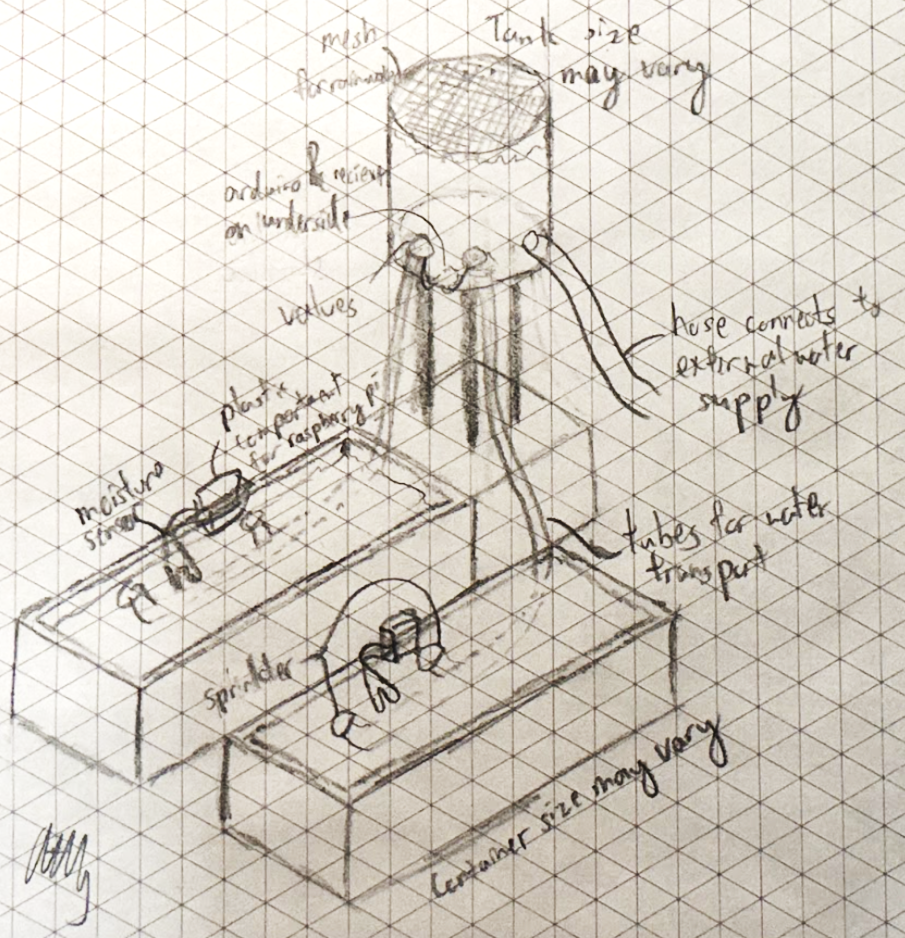
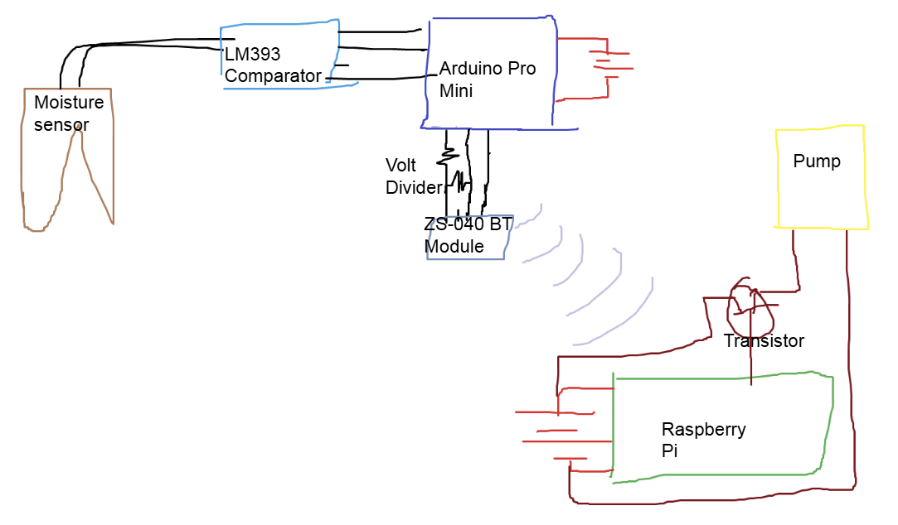
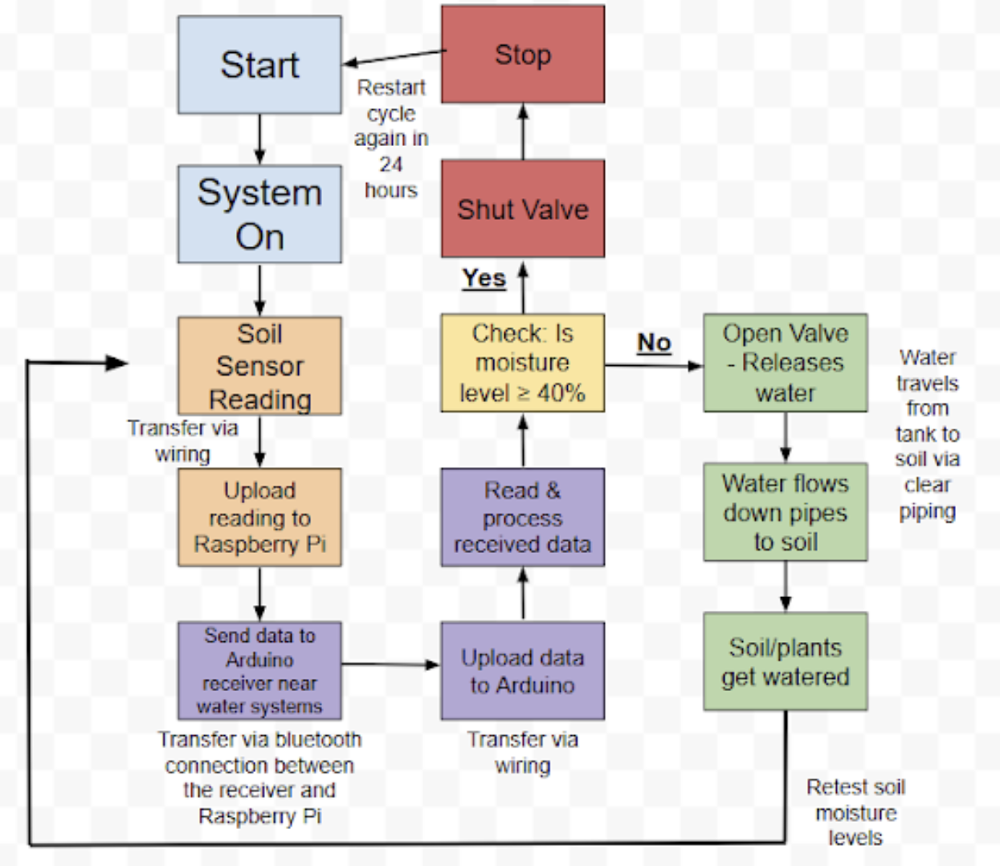
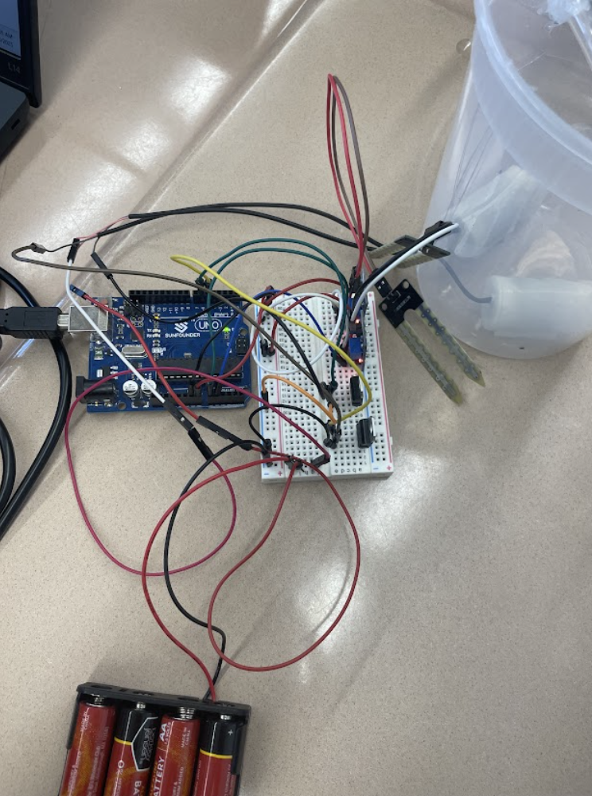
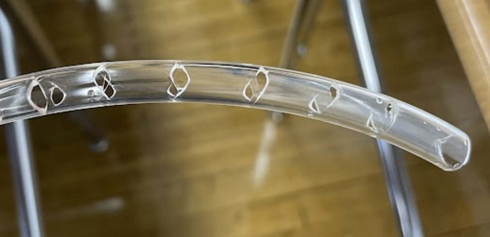
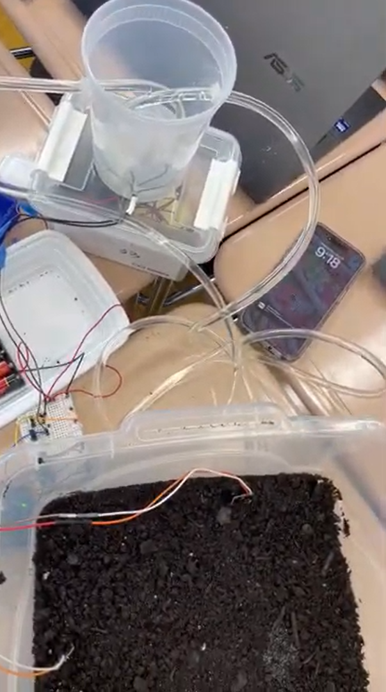

Project Overview
Our mission in this project is to create a smart irrigation system that can potentially save water from overwatering and prevent plants from dying from the lack of water. Additionally, we will use Wi-Fi for a wireless communication between the sensor and the actuators, as well as for a connection to devices such as a phone for viewing sensor information and other control over the pump actuators.
The purpose of this project is to learn how to use microcontrollers and interact with sensors and actuators to perform tasks in the real world. Several new components will be used, including sensors, actuators, resistors, and transistors to protect the microcontroller.
This is a group project in the Bayside High School's Engineering Design & Development course consisting of me, Alaina Giova, Juliana Sicilian, and Rebecca Solomon.
Design & Development Process
Our initial prototype was some soil in multiple makeshift plant pots, with a sensor and Raspberry Pi in each of the pots. On the tank, the Arduino will be connected to multiple valves to allow water into the soil through underground pipes and gravity to water the plants. The Raspberry Pis will transmit information via bluetooth to the Arduino, which will be using a transceiver to receive the data.

Initial design of the prototype
We planned the sensor microcontrollers to read the sensor values and transmit the information, and have the actuator microcontroller to analyze the values and decide whether to open or close the valve. However, we decided to use the Arduino Pro Mini for the sensors and the Raspberry Pi Pico W for the actuator brain, due to improved efficiency and size.

Initial wiring diagram
Our logic was extremely simple. After the readings are transferred to the Pico W, the code checks for each sensor for whether the moisture is above the threshold, which is provided by the user upon startup, and if it is, the valves will open.

Circuit logic diagram of the system
However, the biggest oversight in our system was that bluetooth was not possible, since we have an HC-05 Bluetooth Module running a Class 2 Bluetooth system, while the Pico W runs on BLE or Bluetooth 5.2, making them incompatible with each other. Unfortunately, due to time constraints and increasing complexity, we ended up cutting out wireless connectivity entirely and only used an Arduino Uno with wired connections.
We also ended up switching from valves to pumps because our first valve was for pneumatics instead of water. We also had the benefit where the pump doesn't need to rely on gravity, which made our tank easier to build. Additionally, due to a lack of materials, we used one large soil container rather than multiple smaller ones.
Our code functions by initializing the sensors and actuators, getting user inputs for the moisture threshold, and then reading moisture levels every few seconds. Using the readings, it checks if the moisture is above the threshold, and if it is, it opens the pump.
IrrigationCode.ino
#define MOISTURE_SENSOR_1 A0
#define MOISTURE_SENSOR_2 A1
#define PUMP_1_PIN 8
#define PUMP_2_PIN 7
// Moisture Values
int moisture1 = 0;
int moisture2 = 0;
// Thresholds
int level1 = -1;
int level2 = -1;
// Inital Initialization completion
void setup() {
// Initialize serial communications
Serial.begin(9600);
// Set pump pins as outputs
pinMode(PUMP_1_PIN, OUTPUT);
pinMode(PUMP_2_PIN, OUTPUT);
// Initially turn off both pumps
digitalWrite(PUMP_1_PIN, LOW);
digitalWrite(PUMP_2_PIN, LOW);
// Welcome message and instructions
Serial.println("Moisture Control System");
Serial.println("Please enter threshold values");
Serial.println("Format: level1,level2");
Serial.println("Example: 500,450");
}
void loop() {
// Wait until thresholds are obtained
if (level1 == -1) {
getThresholdLevels();
return;
}
// Read moisture values from sensors
moisture1 = analogRead(MOISTURE_SENSOR_1);
moisture2 = analogRead(MOISTURE_SENSOR_2);
Serial.print("Current moisture values - Sensor 1: ");
Serial.print(moisture1);
Serial.print(", Sensor 2: ");
Serial.println(moisture2);
controlPumps();
delay(2000);
}
void getThresholdLevels() {
if (Serial.available() > 0) {
String data = Serial.readStringUntil('\n');
// Parse threshold input (format: "level1,level2")
int commaIndex = data.indexOf(',');
if (commaIndex != -1) {
level1 = data.substring(0, commaIndex).toInt();
level2 = data.substring(commaIndex + 1).toInt();
Serial.print("Threshold values set - Level 1: ");
Serial.print(level1);
Serial.print(", Level 2: ");
Serial.println(level2);
Serial.println("Setup complete. System is now monitoring moisture levels.");
} else {
Serial.println("Invalid format. Please enter as level1,level2");
}
}
}
void controlPumps() {
// Control pump for sensor 1 (on pin 8)
if (moisture1 < level1) {
digitalWrite(PUMP_1_PIN, HIGH); // Turn on pump 1
Serial.println("Pump 1 ON - Moisture level below threshold");
} else {
digitalWrite(PUMP_1_PIN, LOW); // Turn off pump 1
Serial.println("Pump 1 OFF - Moisture level above threshold");
}
// Control pump for sensor 2 (on pin 7)
if (moisture2 < level2) {
digitalWrite(PUMP_2_PIN, HIGH); // Turn on pump 2
Serial.println("Pump 2 ON - Moisture level below threshold");
} else {
digitalWrite(PUMP_2_PIN, LOW); // Turn off pump 2
Serial.println("Pump 2 OFF - Moisture level above threshold");
}
}The wiring had some complexity, due to voltage and current limitations. The Arduino Uno's digital pins could only supply 40 amps of current, while the pumps needed 100 amps to function. To increase the current, we used a transistor connected to the power supply and protected it with a 1k resistor.

Final circuit of the system
The pipes were made out of a 1/4" plastic, with several holes drilled in the middle to allow water to flow through. The pipes are connected to the pumps in the tank, which are controlled by the Arduino Uno.

Pipes with holes to distribute water
Analysis
The system is functional in the end and is able to successfully water the plants if there is not enough water. The sensor regularly checks the moisture levels of the soil, and if the moisture levels are below the threshold, the pumps will open.
However, there were still some issues. The most notable was that the water didn't truly distribute evenly through the pipes. This was due to the fact that the pressure of the water was not consistent, which led to most water pooling near the front of the pipes. We also had somewhat unstable wires, since the transistors and resistors had worrying signs that they could short circuit.

Final System of the prototype
Conclusion
Overall, we learned a lot from this project. We learned how to have microcontrollers interact with each other as well as sensors and actuators to perform tasks in the real world. We also learned how to safely wire connections, especially since we are dealing with voltage and current limitations. We also learned the basis of communication between microcontrollers.
However, we also had many issues with our system. We overestimated the time it would take to program the communication between the arduino and the Raspberry Pi, and bought products with the incorrect specifications several times, leading us to cut out wireless communication entirely. We also did not expect the complexity of the system caused by voltage and current limitations, and had to make several amendments to the circuit, which took up a lot more time.